정부지원금과 정책자금은 달라요
이 영상은 정부지원금 컨설팅 회사 하우그로우의 옥유정 대표가 진행자 질문에 답하는 대담이에요. 화면 아래 이름표에 소속과 함께 유튜브 '엠마쌤' 채널을 운영한다고 나와요.
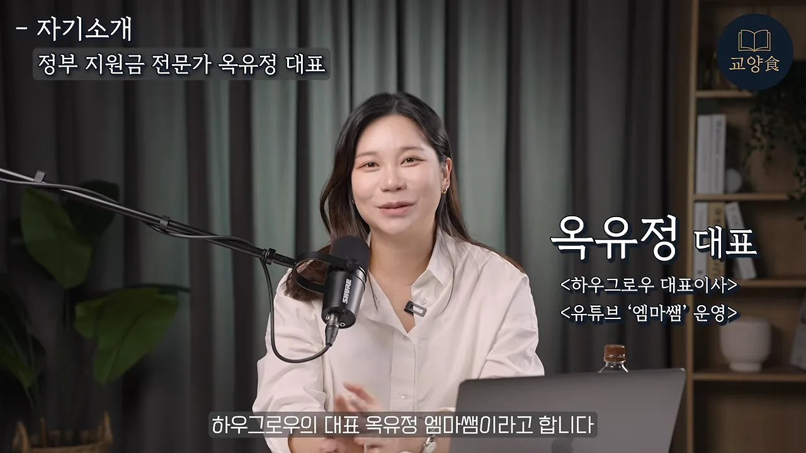
진행자는 "정부지원금으로 최대 5천만 원까지 받을 수 있다는 게 사실이냐"고 물어요. 발표자의 답은 상한이 따로 없다는 거예요. 실제로 받은 사람들의 금액을 계산해 보면 1~2억 원 넘게 받은 경우가 더 많았대요. 해마다 거듭 지원할 수 있으니, 부지런히 지원할수록 금액이 늘어요.
대상도 넓어요. 지금 가게를 하는 소상공인과 자영업자뿐 아니라, 은퇴 뒤 창업을 생각하면서 내 돈만으로 시작하기는 부담스러운 예비 창업자도 받을 수 있어요.
갚는 돈과 갚지 않는 돈
정부가 운영하는 돈은 두 갈래로 나뉘어요. 이 둘을 구분하는 게 모든 이야기의 출발점이에요.
| 정부지원금 | 정책자금 | |
|---|---|---|
| 갚아야 하나요 | 갚지 않아요. 상환 의무가 없어요 | 갚아요. 이자를 내면서 나눠 갚아요 |
| 어떻게 받나요 | 사업계획서를 내고 심사를 통과하면 받아요 | 소상공인·중소기업·청년 등 조건에 맞는 상품을 골라 신청해요 |
| 영상 속 예시 | 7천만 원, 1억 원 | 5년 거치 기간 뒤 매달 낮은 이자로 상환 |
둘 중 하나만 골라야 하는 건 아니에요. 둘 다 받아도 되고, 대출이 싫다면 정부지원금만 받아도 돼요. 이 영상이 주로 다루는 건 갚지 않는 쪽인 정부지원금이에요.
기업마당에서 공고 찾기
발표자는 예전엔 공고가 올라오는 사이트가 수백 곳이라 찾기가 고된 일이었다고 말해요. 정부가 이를 중소벤처24 한 곳으로 합치겠다고 발표했지만, 아직 다 합쳐지지 않아서 지금은 기업마당을 권해요. 소상공인이 참고하기에 가장 좋은 사이트라는 거예요.
기업마당 첫 화면 가운데에 분홍 띠로 '신청 가능한 지원사업 1,499건'이 떠 있어요. 2026년 8월 3일 기준 숫자예요. 왼쪽 카드의 맨 아래 줄 '인기공고 855건'에 마우스가 올라가 있죠. 발표자가 가장 먼저 눌러 보라는 곳이에요.
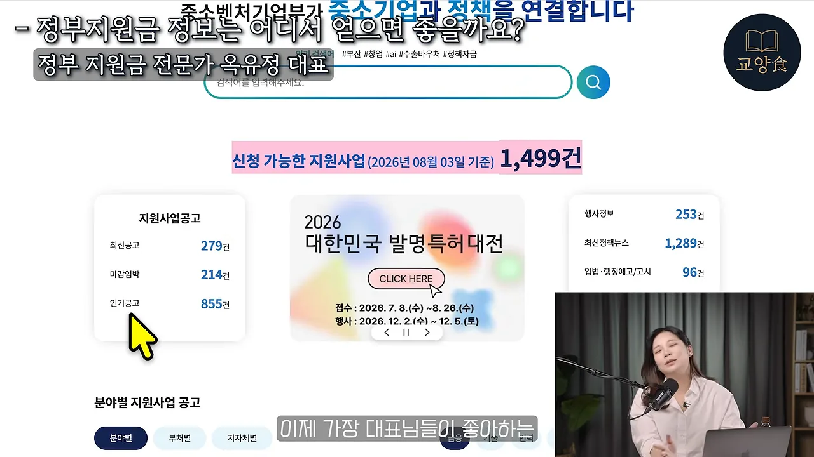
공고는 아는 사람만 몰래 받는 게 아니에요. 중앙부처 사업이든 지자체 사업이든 반드시 공시하게 되어 있어서, 이런 공개 사이트에 다 올라와요.
분야로 거르기
공고 목록 위에는 동그란 아이콘이 줄지어 있어요. 금융, 기술, 인력, 수출, 내수, 창업, 경영 같은 분야예요. 아래 캡처는 '인력(104)'을 누른 순간이에요.
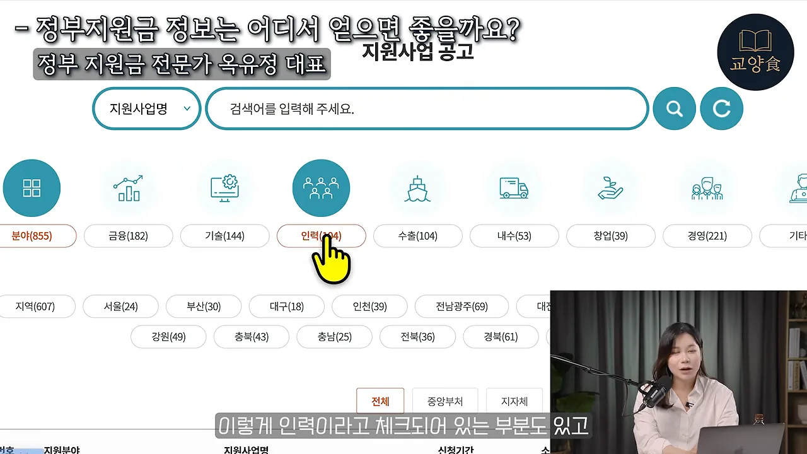
지원금은 사업에 쓰는 돈이에요. 제품 제작, 마케팅, 인건비처럼 사업에 필요한 건 대부분 되지만, 집 월세나 개인 대출 상환에는 못 써요. 발표자는 수출 예시를 들어요. 집에서 만든 된장·고추장을 일본이나 미국에도 팔고 싶다면, 수출 분야에서 해외 박람회 참가나 해외 인증을 지원받을 수 있어요.
여기서 말하는 '대표님'은 이미 사업자인 사람만 뜻하지 않아요. 지금 회사에 다니는 직장인도 사업할 뜻이 있으면 대상이에요. 개인사업자, 법인사업자, 간이·면세 사업자 모두 지원할 수 있어요.
중앙부처와 지자체, 둘 다 확인하기
정부지원금은 누가 뽑느냐에 따라 두 종류예요. 아래 목록의 오른쪽 '소관부처' 칸을 보면 문화체육관광부, 산업통상부, 중소벤처기업부처럼 '부'로 끝나는 이름이 이어져요. 이런 중앙부처 사업은 전국 단위라서 어디에 살든 지원할 수 있어요.
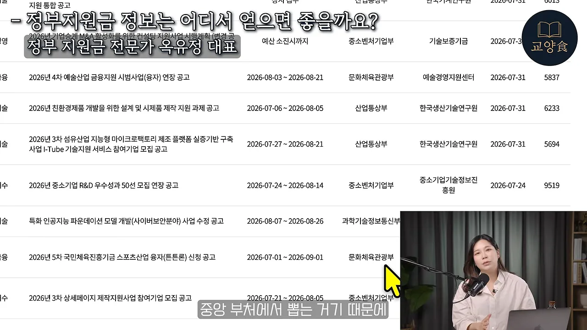
지자체 사업은 지역을 봐요. 예비 창업자는 주민등록상 주소, 사업자는 사업자등록증의 사업장 소재지가 기준이에요. 경기도에 산다면 지역 버튼 줄의 오른쪽 끝 '경기'를 누르면 돼요. 아래 캡처에서 손 모양 커서가 그 버튼 위에 있어요.
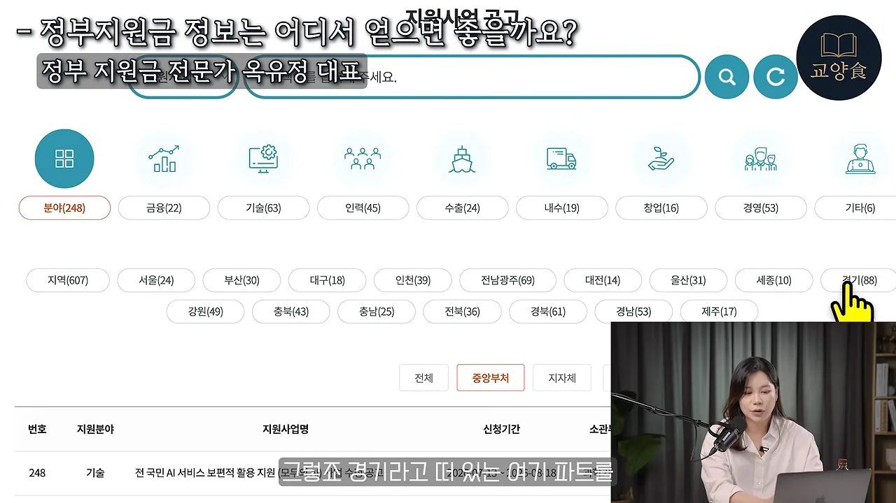
경기도 지자체 목록에는 수출, 입점, 반려동물, 여성 농업인, 물류비 지원 같은 사업이 섞여 있었어요. 전국 사업과 우리 지역 사업을 모두 챙겨야 받을 기회가 늘어요.
경쟁이 낮은 공고는 따로 있어요
숨은 공고를 찾는 방법을 묻자, 발표자는 지자체 사이트를 꼽아요. 특히 시·군 단위 사업은 "솔직히 꿀"이라고 말해요. 전국 사업과 지역 사업은 성격이 꽤 달라요.
지역마다 농업기술센터, 산업진흥원, 경제진흥원 같은 기관이 있고, 이곳들이 여는 사업은 지원자가 너무 적대요. 그래서 사업계획서 서류를 한 번 만들어 두면 지역 사업을 거의 싹쓸이하는 사람도 있다고 해요. 중앙부처 사업 중에서도 제목에 '연장 공고'나 '재모집'이 붙은 공고는 지원자가 모자라 다시 뽑는 거라, 놓치지 말라고 해요.
대부분이 못 받는 이유
발표자가 보는 가장 큰 이유는 이런 제도가 있는지 모른다는 거예요. 발표자도 23살에 대학생으로 첫 창업을 할 때 모아 둔 돈이 없어 방법을 찾다가 지원 사업을 알게 됐대요. 지금도 상담해 보면 "이런 게 있는 줄 몰랐다"는 사람이 대부분이래요.
이 대목에서 화면 왼쪽 위에 기사 한 장이 떠요. 제목은 '소상공인 80% DX 기초 수준… 정부 지원사업 참여 3% 그쳐'예요. 발표자는 이 기사를 들어 소상공인의 정부 지원사업 참여가 3%밖에 안 된다고 말해요.
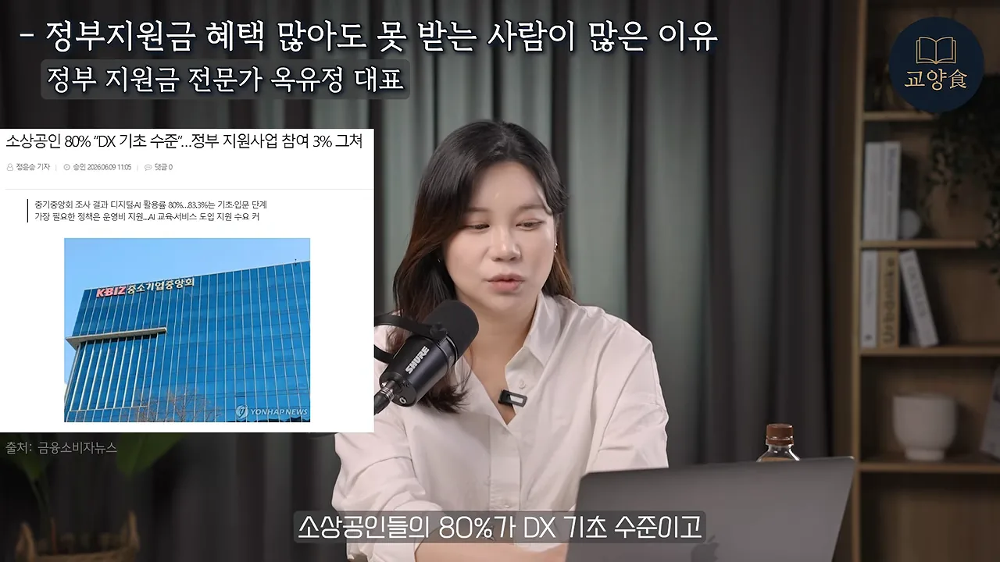
숫자의 범위와 상관없이 발표자의 결론은 같아요. 지원 사업은 이렇게 많은데 지원하는 사람은 적으니, 생각보다 경쟁이 세지 않다는 거예요. 세금은 꼬박꼬박 냈는데 혜택을 하나도 못 받았다면, 지원을 안 해서라고 말해요.
나이도, 컴퓨터 실력도 걸림돌이 아니에요
진행자는 은퇴를 앞둔 중년이 놓치기 쉬운 지원금을 물어요. 발표자의 답은 정부지원 사업에는 연령 제한이 없다는 거예요. 가장 많이 받는 질문이 "50대도 되나요, 60대도 되나요"인데, 70대도 된다고 답한대요.
나이가 많으면 오히려 유리한 면도 있어요. 오래 쌓은 경험과 강점을 사업계획서에서 내세울 수 있으니까요. 발표자는 두 사례를 들어요.
- 군 출신 은퇴 예정자 — 군에서 오래 일하다 은퇴 뒤 할 일을 고민했어요. 은퇴 자금을 쓰는 대신 아이템을 정하고 사업계획서를 써서 지원금 5,700만 원을 받고 창업했어요.
- 치과 보철을 만들던 최상균 대표 — 원래 컴퓨터를 거의 못 다뤘대요. 사업계획서를 쓴 뒤 여러 지원 사업에 선정됐어요.
두 번째 사례가 소개될 때 화면 오른쪽에 짧은 카드가 떠요. 노란 바탕의 '7천만원'이 눈에 띄어요.
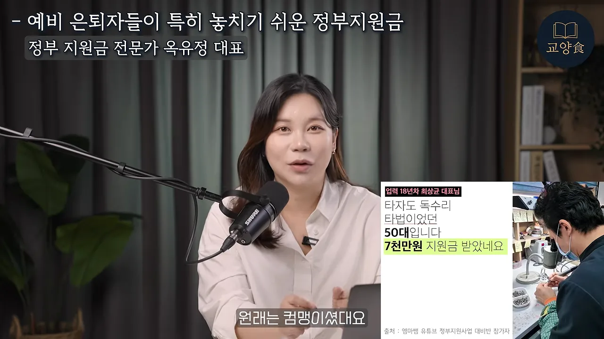
나이 든 사람을 위한 사업도 따로 있어요. 발표자는 중장년 지원 사업, 그리고 환경을 생각하는 벤처를 위한 에코스타트업 같은 사업을 예로 들어요. 기회가 많으니 나이나 컴퓨터 실력 때문에 미리 포기하지 말라는 게 이 대목의 요지예요.
지금 노려볼 사업: 모두의 창업
공고를 보자마자 꼭 신청해야겠다고 판단하는 기준을 묻자, 발표자는 사업 하나를 콕 집어요. 정부가 새로 기획한 모두의 창업이에요. 이번 정부 들어 지원금이 역대 최대로 늘었는데, 창업 지원 사업에서 1만 명을 뽑는 건 처음 봤대요.
발표자가 말한 구조는 이래요. 1기는 상반기에 5천 명을 뽑았고, 2기는 하반기에 1만 명을 뽑아요. 예비 창업자부터 업력 7년 이내 소상공인까지 지원할 수 있어요. 한 번 붙고 끝나는 게 아니라 라운드를 거칠수록 지원이 커져요.
발표자가 강조하는 건 타이밍이에요. 몇 년째 이어 온 사업이 아니라 정부가 작심하고 크게 기획한 사업이라, 이렇게 밀어줄 때 지원해야 한대요. 한두 명 뽑는 사업은 붙기 어렵지만 한 번에 1만 명을 뽑으면 넣어 보기만 해도 가능성이 훨씬 높다는 거예요.
공고는 정부가 운영하는 '모두의 창업' 사이트에 올라와요. 아래는 검색 결과에서 그 사이트를 누르는 장면이에요.
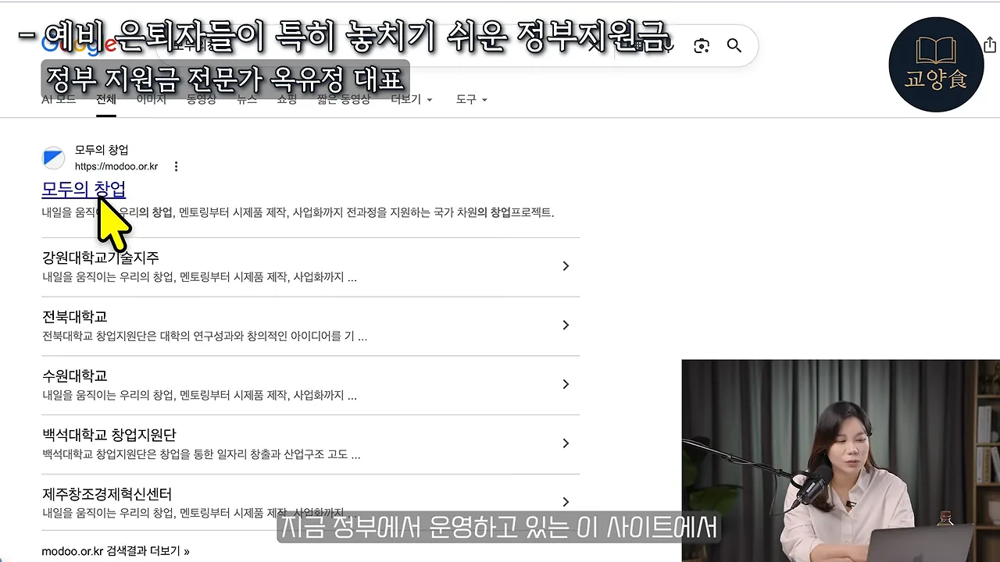
선착순일까, 중복으로 받을 수 있을까
빨리 내야 유리할까요
선착순인 사업도 있긴 해요. 배달비·택배비 지원, 전기료 지원처럼 30만 원 안팎의 작은 지원은 공고에 '예산 소진 시까지'라고 적혀 있어요. 하지만 수천만 원에서 억 단위로 주는 사업은 선착순이 거의 없어요.
| 작은 지원 | 큰 지원 | |
|---|---|---|
| 금액 | 30만 원 안팎 | 수천만 원~억 단위 (발표자 기준 100만 원 넘으면) |
| 예시 | 배달·택배비, 전기료 | 사업화 자금, 창업 지원금 |
| 뽑는 방식 | 예산이 떨어질 때까지 선착순 | 신청 기간 안에 낸 사람을 모아 평가 |
| 사업계획서 | 보통 없어요. 앱에서 바로 신청 | 반드시 내야 해요 |
큰 사업은 공고에 신청 기간이 날짜와 시간까지 적혀 있어요. 아래 공고는 신청 기간이 2026년 7월 13일부터 8월 18일까지예요. 이 안에 낸 사람은 언제 냈든 모두 같은 평가 대상이에요.
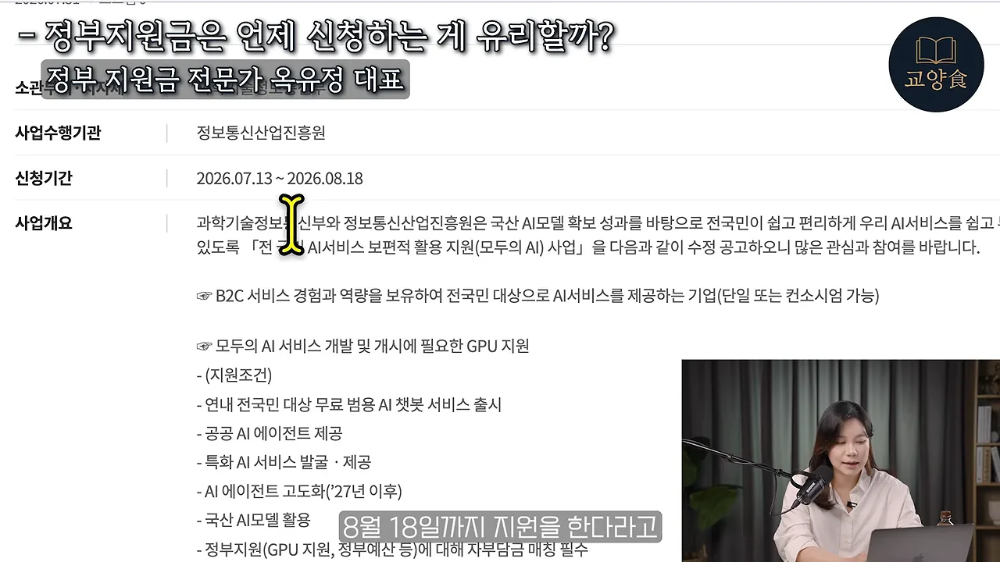
대신 기한이 짧아요. 보통 2주, 길어야 한 달 정도예요. 마감에 닥쳐서 서류를 떼고 작성까지 하려면 벅차니, 벼락치기 말고 미리 준비해 두라고 해요.
여러 개를 같이 받을 수 있나요
한 번 받으면 다른 지원은 못 받는다고 생각하는 사람이 많은데, 대부분은 여러 사업을 함께 받는 중복 수혜가 가능해요. 발표자의 수강생들도 사업계획서 하나로 받고, 또 받는 식으로 이어 간대요. 부처가 워낙 많고 지자체까지 더하면 기회가 많기 때문이에요.
제한이 있는 경우는 공고 맨 끝에 표로 붙어 있어요. 아래 캡처는 중기부 공고의 '동시 수행 불가한 창업지원사업 목록'이에요. 예비창업패키지, 초기창업패키지, 창업도약패키지, 재도전성공패키지 같은 사업이 줄지어 있고, 오른쪽 소관 부처 칸은 대부분 중소벤처기업부예요.
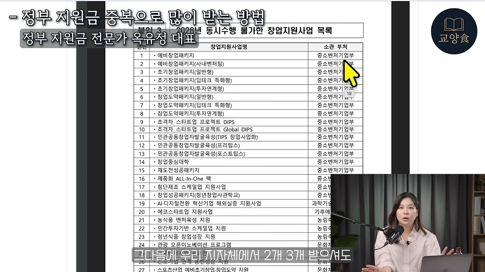
목록 밖의 사업은 함께 해도 돼요. 중기부 사업 하나에 서울시 같은 지자체 사업 두세 개를 더 받아도 괜찮아요. 그래서 사업계획서를 한 번 만들어 두면 그때부터는 여러 곳에 넣는 게 이득이라고 말해요.
정말 안 갚아도 되나요
발표자는 여러 번 강조해요. 정부지원금은 갚지 않아도 돼요. 기업이 많이 생겨야 일자리가 늘고 세금도 더 걷히니, 경제를 살리려고 주는 돈이에요. 이런 창업 지원은 우리나라에만 있는 것도 아니래요. 갚아야 하는 건 앞에서 본 정책자금이에요.
누가 받나요: 평범한 사람과 업력
큰 금액은 큰 회사나 대단한 사업가만 받는다고 생각하기 쉬워요. 발표자가 소개하는 선정자들은 정말 평범한 사람들이에요. 식당을 하던 사람, 드론 일을 하던 사람, 예술가, 세일즈맨, 아이를 키우던 엄마, 병원 실장, 다니던 회사가 부도나서 직접 사업을 시작한 직장인이 있었대요.
지원 대상도 막 시작하려는 예비 창업자부터 업력 3년·5년·7년·10년 이내 소상공인까지 넓어요. 중견기업만 밀어주는 제도가 아니라는 거예요.
나이는 상관없고, 업력은 상관있어요
여기서 중요한 구분이 나와요. 60대든 70대든 나이는 상관없지만, 사업자등록을 한 뒤 흐른 기간인 업력은 영향을 줘요. 지원금은 막 시작해 휘청이는 회사가 버티고 크라고 주는 돈이라, 업력이 오래될수록 받을 수 있는 사업이 조금씩 줄어요. 아예 없는 건 아니지만 초기 창업보다는 적어요.
발표자가 재미있는 사례로 꼽는 건 어머니와 함께 식당을 하던 딸이에요. 어머니의 사업자는 업력이 너무 길었어요. 그래서 딸은 아직 자기 사업자가 없다는 점을 살려 예비 창업자로 지원했고, 7,500만 원 사업에 선정됐어요. 최근에는 4천만 원을 주는 AI 혁신 소상공인 지원 사업 서류 심사에도 붙었대요.
가족이 같이 장사하는 소상공인이 많으니, 부모가 사업자여도 자녀가 예비 창업자로 지원할 수 있어요. 개인사업자가 법인사업자를 새로 만드는 방법도 있어요. 법인은 초기 창업으로 인정받을 수 있어서, 사업자를 하나 더 만드는 것만으로 받을 수 있는 금액이 늘어요.
사업계획서와 발표 심사
금액이 큰 사업일수록 심사가 까다롭지 않냐는 질문에, 발표자는 공고 사이트를 하나 더 알려 줘요. 창업 지원 공고가 많이 올라오는 K-스타트업이에요. 사업 공고에서 '모집중'으로 들어간 뒤 '지원분야'의 '사업화'에 체크하면 돈을 주는 사업이 주로 나와요.
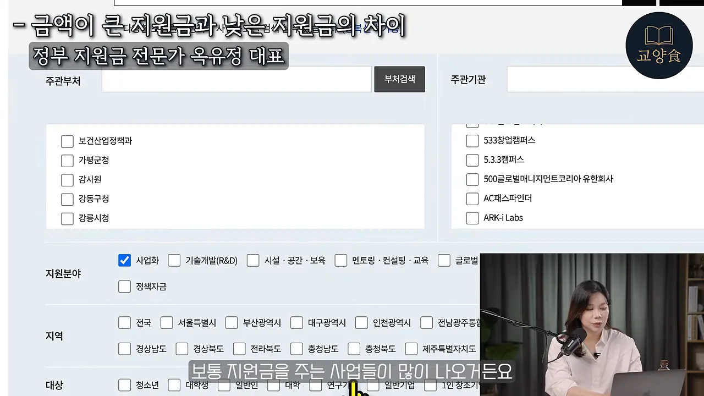
그렇게 찾은 '청년 창업 지역 정착 지원 사업' 공고를 열어 제출 서류를 보면, 여덟 가지 서류 중 4번이 분홍색으로 칠해져 있어요. 사업계획서예요.
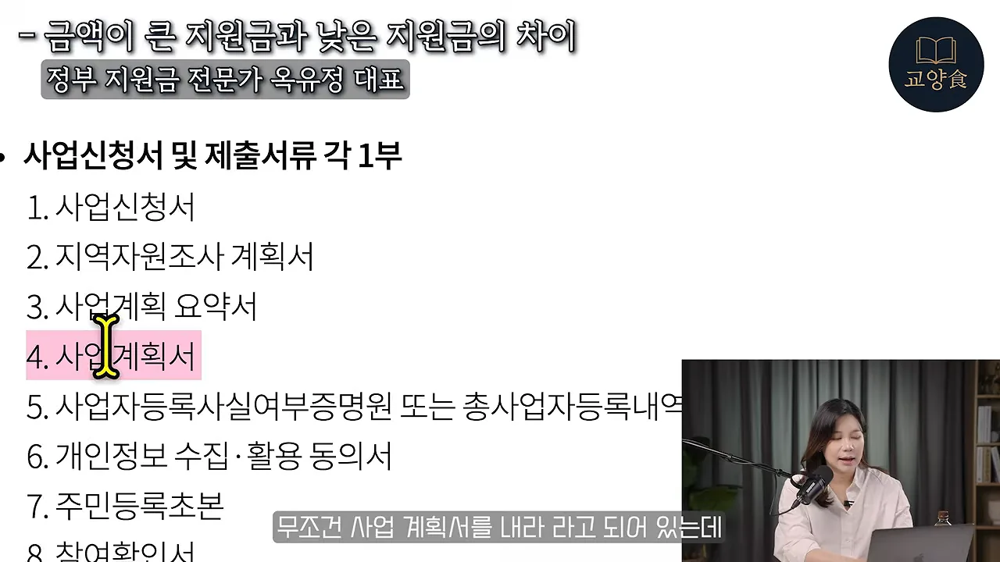
30만 원 안팎의 선착순 지원은 사업자만 있으면 앱에서 몇 번 눌러 신청하고 끝나요. 금액이 커질수록 반드시 사업계획서를 내야 하고, 계획서가 잘 쓰일수록 받는 금액도 커진다는 게 발표자의 설명이에요.
심사는 채용과 똑같은 두 단계예요
발표자는 아르바이트생 뽑는 과정에 빗대요. 먼저 이력서와 자기소개서를 받고, 괜찮으면 면접을 보죠. 정부지원금도 같아요.
flowchart LR A["공고 확인
평가 기준 읽기"] --> B["1차 서류 평가
사업계획서 = 이력서"] B -->|합격| C["2차 발표 심사
5~15분 = 면접"] C --> D["선정"]
그런데 첫 관문은 의외로 프로그램이래요. 정부지원 사업의 사업계획서 양식은 거의 다 '한글' 파일이에요. 발표자가 물어보면 90%는 컴퓨터에 한글이 없대요. 정부 기관과 일하지 않으면 쓸 일이 없으니까요. 워드가 아니라 한글로 써야 한다는 데서 겁을 먹고 포기하는 사람이 많고, 그게 참여율이 낮은 이유 같다고 해요. 70대 수강생도 해내니, 이 벽만 넘으면 충분히 할 수 있대요.
양식과 평가 기준을 먼저 보세요
공고에는 사업계획서 양식이 붙어 있어요. 아래 양식은 '1. 사업동기 및 목적', '2. 개요', '3. 목표' 순서로 칸이 나뉘어 있고, 칸마다 무엇을 쓸지 괄호 안에 안내가 있어요. 이 순서에 맞춰 쓰는 게 기본이에요.
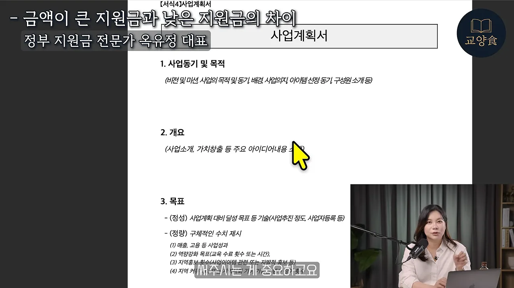
잘 붙고 싶다면 공고문의 평가 기준을 꼭 읽으라고 해요. 정부도 아무 기준 없이 뽑지 않고 배점을 다 공개해 둬요. 아래 평가표를 보면 사업내용 50점, 기여도 30점, 기대효과 20점이에요. 사업내용 안에서는 '의지 및 역량'이 20점으로 가장 커요.
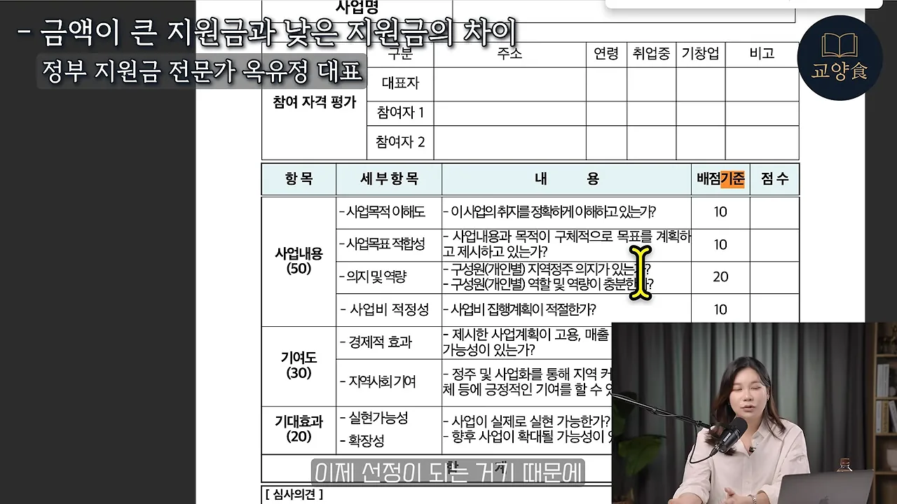
매년 받는 기업은 매주 확인해요
매년 받는 기업과 한 번도 못 받는 기업의 차이도 단순해요. 못 받는 쪽은 공고 사이트를 안 봐요. 잘 받는 쪽은 월요일이든 금요일이든 요일을 정해 일주일에 한 번씩 받을 만한 지원금이 있는지 확인해요.
발표자 회사도 이번에 다섯 명분 인건비를 지원받았대요. 유튜브 PD(Producer), 마케터, 영업, 운영 기획, CS(Customer Service), 개발자처럼 여러 직무에 쓸 수 있는 공고가 계속 나와요. 다만 공고는 2~4주 뒤 마감되니, 주기적으로 확인하는 사람만 잡을 수 있어요.
사업계획서에는 미래를 써요
먼저 걸려 오는 전화는 조심하세요
결국 부지런히 지원하는 사람이 많이 받아요. 지원금은 신청한 사람에게 주는 돈이기 때문이에요. 반대로 가만히 있는데 "대표님, 지원금 받게 해 드릴게요"라는 전화가 오면 절대 속지 말라고 해요. 정부가 먼저 연락하는 일은 없어요. 남이 대신 신청하거나 대신 써 주는 건 정부가 불법으로 보고 있고, 단속하는 TF(Task Force)도 만들었대요.
계획서에는 지금이 아니라 미래를 써요
1억 원을 목표로 처음 사업을 시작한다면 무엇부터 준비할까요. 발표자의 답은 아이템이에요. 다만 사업계획서가 묻는 건 '치킨집을 할까, 카페를 할까' 같은 당장의 업종이 아니에요. 이름 그대로 계획서라서, 회사가 앞으로 어떻게 커 갈지를 보여 줘야 해요.
발표자는 유튜브 채널을 예로 들어요. "채널을 운영해 광고 수익을 벌겠다"에서 멈추면 평범한 계획서예요. 채널이 커지면 여러 채널을 운영하고, 더 나아가 콘텐츠를 만드는 기업, AI를 활용하는 기업이 될 수 있다는 그림까지 그려야 해요. 단기 임대를 하겠다는 사람도 마찬가지예요.
그래서 겸손하게 있는 것만 쓰지 말고, 설레는 마음으로 5년·10년 뒤를 상상하며 쓰라고 해요. 발표자는 정주영 현대그룹 창업주 이야기를 꺼내요. 조선소를 짓기 위해 영국 은행에서 돈을 빌려야 했는데, 배는 한 척도 없었어요. 대신 500원짜리 지폐의 거북선을 보여 주며 "우리는 영국보다 300년 앞서 배를 만든 나라"라고 설득했다는 거예요. 사업계획서가 바로 그런 역할이래요.
업종도, 매출도 크게 상관없어요
"식당하는 사람을 위한 지원금이 있나요"라는 질문을 많이 받는대요. 하지만 요식업, 구매대행업, 단기 임대업처럼 업종별로 나뉜 지원은 거의 없어요. 정부는 예비 창업자, 3년 이내처럼 업력으로 나누고, 그 안에서는 모든 업종이 지원할 수 있어요.
예외는 두 가지예요. 유흥업과 사행업은 아무리 원해도 지원할 수 없어요.
매출도 꼭 있어야 하는 건 아니에요. 발표자가 아는 한 대표는 매출 0원 상태에서 사업계획서로 민간 투자 14억 원을 받았대요. 같은 계획서를 정부가 아니라 투자자 앞에서 발표하면 IR(Investor Relations)이라고 불러요. 중요한 건 지금의 매출이 아니라 앞으로 사업을 어떻게 키울지 보여 주는 거예요.
마지막 당부
발표자는 정부지원금은 "안 타면 바보"라고 웃으며 말해요. 어차피 누군가는 받게 되어 있는 돈이고, 4월 추경으로 예산이 더 늘었대요. 나라가 계속 받아 가라고 하는데 지원하지 않으면, 세금만 내고 내 몫은 못 챙긴다는 거예요.